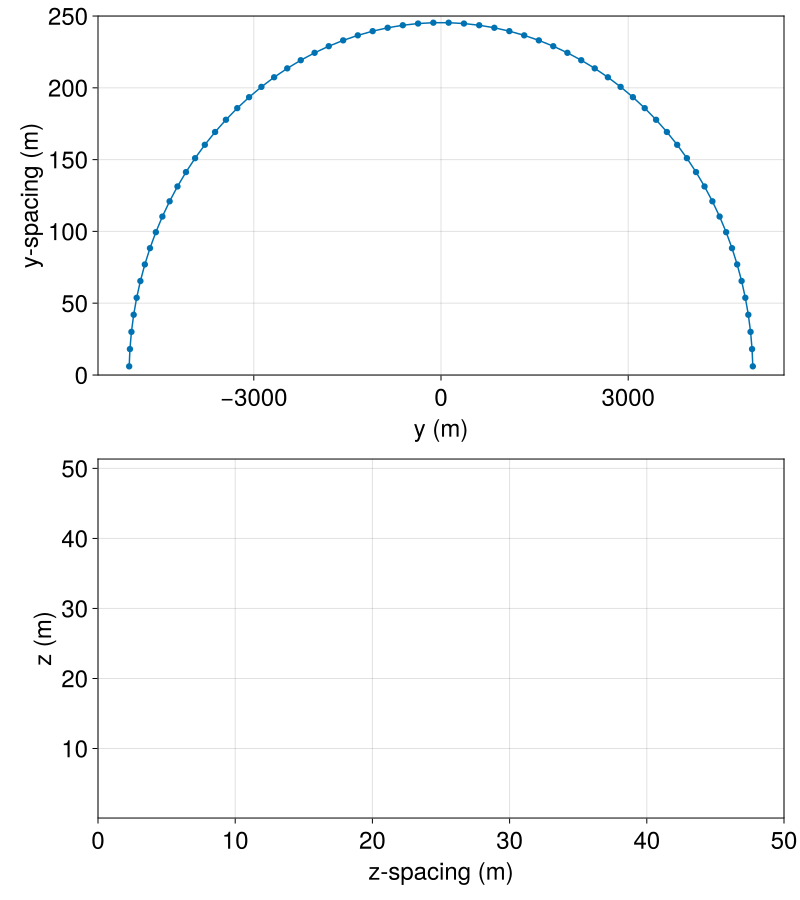

Grids
The grids currently supported are:
RectilinearGrids with either constant or variable grid spacings andLatitudeLongitudeGridon the sphere.
RectilinearGrid
A RectilinearGrid is constructed by specifying the size of the grid (a Tuple specifying the number of grid points in each direction) and either the extent (a Tuple specifying the physical extent of the grid in each direction), or by prescribing x, y, and z. Keyword arguments x, y, and z could be either (i) 2-Tuples that define the the end points in each direction, or (ii) arrays or functions of the corresponding indices i, j, or k that specify the locations of cell faces in the x-, y-, or z-direction, respectively.
A regular rectilinear grid with $N_x \times N_y \times N_z = 32 \times 64 \times 256$ grid points and an extent of $L_x = 128$ meters, $L_y = 256$ meters, and $L_z = 512$ meters is constructed by
julia> grid = RectilinearGrid(size = (32, 64, 256), extent = (128, 256, 512))
32×64×256 RectilinearGrid{Float64, Periodic, Periodic, Bounded} on CPU with 3×3×3 halo
├── Periodic x ∈ [0.0, 128.0) regularly spaced with Δx=4.0
├── Periodic y ∈ [0.0, 256.0) regularly spaced with Δy=4.0
└── Bounded z ∈ [-512.0, 0.0] regularly spaced with Δz=2.0When using the extent keyword, e.g., extent = (Lx, Ly, Lz), then the $x \in [0, L_x]$, $y \in [0, L_y]$, and $z \in [-L_z, 0]$ – a sensible choice for oceanographic applications.
Specifying the grid's architecture
The first positional argument in either RectilinearGrid or LatitudeLongitudeGrid is the grid's architecture. By default architecture = CPU(). By providing GPU() as the architecture argument we can construct the grid on GPU:
julia> grid = RectilinearGrid(GPU(), size = (32, 64, 256), extent = (128, 256, 512))
32×64×256 RectilinearGrid{Float64, Periodic, Periodic, Bounded} on GPU with 3×3×3 halo
├── Periodic x ∈ [0.0, 128.0) regularly spaced with Δx=4.0
├── Periodic y ∈ [0.0, 256.0) regularly spaced with Δy=4.0
└── Bounded z ∈ [-512.0, 0.0] regularly spaced with Δz=2.0Specifying the grid's topology
Another crucial keyword is a 3-Tuple that specifies the grid's topology. In each direction the grid may be Periodic, Bounded or Flat. By default, both the RectilinearGrid and the RectilinearGrid constructors assume the grid topology is horizontally-periodic and bounded in the vertical, such that topology = (Periodic, Periodic, Bounded).
A "channel" model that is periodic in the $x$-direction and wall-bounded in the $y$- and $z$-dimensions is build with,
julia> grid = RectilinearGrid(topology = (Periodic, Bounded, Bounded), size = (64, 64, 32), extent = (1e4, 1e4, 1e3))
64×64×32 RectilinearGrid{Float64, Periodic, Bounded, Bounded} on CPU with 3×3×3 halo
├── Periodic x ∈ [0.0, 10000.0) regularly spaced with Δx=156.25
├── Bounded y ∈ [0.0, 10000.0] regularly spaced with Δy=156.25
└── Bounded z ∈ [-1000.0, 0.0] regularly spaced with Δz=31.25The Flat topology comes in handy when running problems with fewer than 3 dimensions. As an example, to use a two-dimensional horizontal, doubly periodic domain the topology is (Periodic, Periodic, Flat). In that case, the size and extent are 2-tuples, e.g.,
julia> grid = RectilinearGrid(topology = (Periodic, Periodic, Flat), size = (32, 32), extent = (10, 20))
32×32×1 RectilinearGrid{Float64, Periodic, Periodic, Flat} on CPU with 3×3×0 halo
├── Periodic x ∈ [0.0, 10.0) regularly spaced with Δx=0.3125
├── Periodic y ∈ [0.0, 20.0) regularly spaced with Δy=0.625
└── Flat zSpecifying domain end points
To specify a domain with a different origin than the default, the x, y, and z keyword arguments must be used. For example, a grid with $x \in [-100, 100]$ meters, $y \in [0, 12.5]$ meters, and $z \in [-\pi, \pi]$ meters is constructed via
julia> grid = RectilinearGrid(size = (32, 16, 256), x = (-100, 100), y = (0, 12.5), z = (-π, π))
32×16×256 RectilinearGrid{Float64, Periodic, Periodic, Bounded} on CPU with 3×3×3 halo
├── Periodic x ∈ [-100.0, 100.0) regularly spaced with Δx=6.25
├── Periodic y ∈ [0.0, 12.5) regularly spaced with Δy=0.78125
└── Bounded z ∈ [-3.14159, 3.14159] regularly spaced with Δz=0.0245437Grids with non-regular spacing in some of the directions
For a "channel" model, as the one we constructed above, one would probably like to have finer resolution near the channel walls. We construct a grid that has non-regular spacing in the bounded dimensions, here $y$ and $z$ by prescribing functions for y and z keyword arguments.
For example, we can use the Chebychev nodes, which are more closely stacked near boundaries, to prescribe the $y$- and $z$-faces.
julia> Nx, Ny, Nz = 64, 64, 32;
julia> Lx, Ly, Lz = 1e4, 1e4, 1e3;
julia> chebychev_spaced_y_faces(j) = - Ly/2 * cos(π * (j - 1) / Ny);
julia> chebychev_spaced_z_faces(k) = - Lz/2 - Lz/2 * cos(π * (k - 1) / Nz);
julia> grid = RectilinearGrid(size = (Nx, Ny, Nz),
topology = (Periodic, Bounded, Bounded),
x = (0, Lx),
y = chebychev_spaced_y_faces,
z = chebychev_spaced_z_faces)
64×64×32 RectilinearGrid{Float64, Periodic, Bounded, Bounded} on CPU with 3×3×3 halo
├── Periodic x ∈ [0.0, 10000.0) regularly spaced with Δx=156.25
├── Bounded y ∈ [-5000.0, 5000.0] variably spaced with min(Δy)=6.02272, max(Δy)=245.338
└── Bounded z ∈ [-1000.0, 0.0] variably spaced with min(Δz)=2.40764, max(Δz)=49.0086We can easily visualize the spacings of $y$ and $z$ directions. We can use, e.g., ynodes and yspacings to extract the positions and spacings of the nodes from the grid.
yᶜ = ynodes(grid, Center())
Δyᶜ = yspacings(grid, Center())
zᶜ = znodes(grid, Center())
Δzᶜ = zspacings(grid, Center())
using CairoMakie
fig = Figure(size=(800, 900))
ax1 = Axis(fig[1, 1]; xlabel = "y (m)", ylabel = "y-spacing (m)", limits = (nothing, (0, 250)))
lines!(ax1, yᶜ, Δyᶜ)
scatter!(ax1, yᶜ, Δyᶜ)
ax2 = Axis(fig[2, 1]; xlabel = "z-spacing (m)", ylabel = "z (m)", limits = ((0, 50), nothing))
lines!(ax2, zᶜ, Δzᶜ)
scatter!(ax2, zᶜ, Δzᶜ)
LatitudeLongitudeGrid
A simple latitude-longitude grid with Float64 type can be constructed by
julia> grid = LatitudeLongitudeGrid(size = (36, 34, 25),
longitude = (-180, 180),
latitude = (-85, 85),
z = (-1000, 0))
36×34×25 LatitudeLongitudeGrid{Float64, Periodic, Bounded, Bounded} on CPU with 3×3×3 halo and with precomputed metrics
├── longitude: Periodic λ ∈ [-180.0, 180.0) regularly spaced with Δλ=10.0
├── latitude: Bounded φ ∈ [-85.0, 85.0] regularly spaced with Δφ=5.0
└── z: Bounded z ∈ [-1000.0, 0.0] regularly spaced with Δz=40.0For more examples see RectilinearGrid and LatitudeLongitudeGrid.